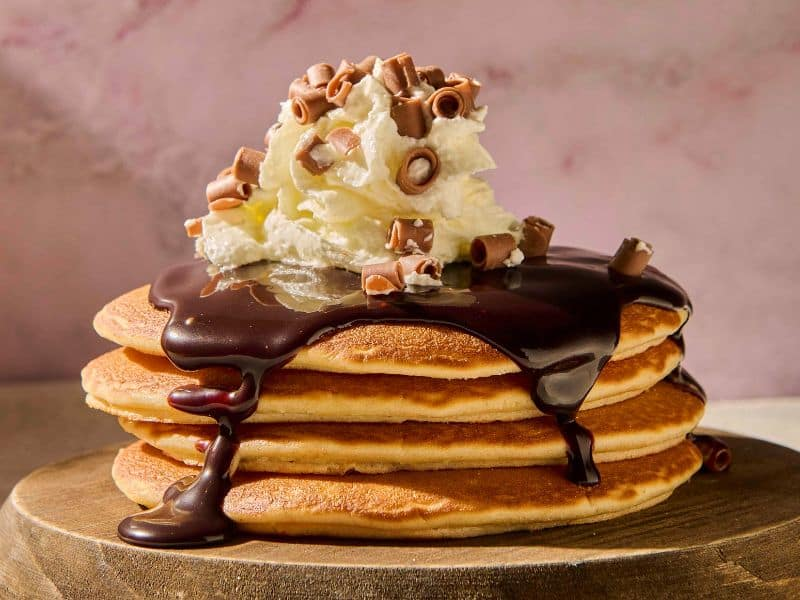

Ingredientes
- Mantequilla 30gr
- 2 Huevos
- Leche entera 250 ml
- Extracto de Vainilla 5ml
- Harina de trigo 200gr
- Levadora química 10gr
- Azúcar 40 gr
Elaboración
- Mezcla los ingredientes secos:
En un bol grande, tamiza la harina, la levadura, el azúcar y la sal. Mezcla bien.
- Mezcla los ingredientes líquidos:
En otro bol, bate el huevo con la leche, la mantequilla derretida y la vainilla (si la usas).
- Combina las mezclas:
Vierte los ingredientes líquidos sobre los secos y mezcla con una espátula o batidor de mano.
No mezcles en exceso: es normal que queden algunos grumos.
- Precalienta la sartén:
Calienta una sartén antiadherente a fuego medio y añade un poco de mantequilla o aceite.
- Cocina las tortitas:
Vierte un poco de masa en la sartén (aproximadamente 1/4 de taza).
Cocina hasta que empiecen a aparecer burbujas en la superficie (1-2 minutos).
- Dales la vuelta:
Cuando veas burbujas y los bordes se vean cocidos, voltea la tortita con una espátula.
Cocina 1 minuto más por el otro lado hasta que esté dorada.
- Repite el proceso:
Cocina el resto de la masa, añadiendo más mantequilla si es necesario.
- Sirve caliente:
Acompaña con sirope de arce, frutas, miel, crema batida o lo que prefieras.
El desayuno de todos los niños americanos.
Para descubrir la receta puedes visitar https://es.wikipedia.org/wiki/Panqueque